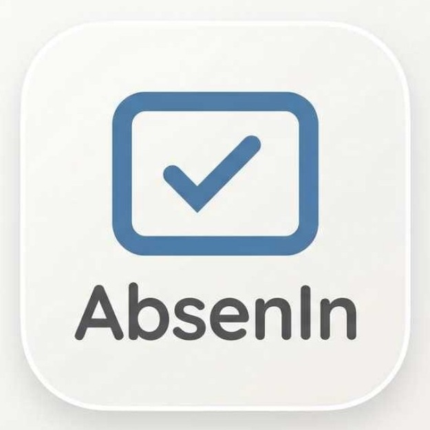

AbsenInPANEL PENGURUS
PANEL ADMINISTRASI
Kontrol kegiatan,
lebih sederhana.
Hari ini
AD
AD
TOTAL ANGGOTA
0
Anggota terdaftar
HADIR HARI INI
0
Absensi tercatat
IZIN MENUNGGU
0
Perlu diverifikasi
KEHADIRAN
Log absensi terbaru
| Nama | Tanggal | Waktu | Status |
|---|
TINDAK LANJUT
Verifikasi izin
| Nama | Tanggal | Alasan | Status | Aksi |
|---|
DATA ANGGOTA
Tambah anggota
IMPOR BANYAK ANGGOTA
Satu baris per anggota: ID,NAMA,KELAS. Password awal dibuat otomatis dan diunduh dalam CSV.
ADMINISTRASI
Perbarui status kas
Ringkasan kas anggota
| Nama | ID unik | Status kas | Diperbarui |
|---|
Data profil anggota harus dibuat di Firebase Authentication dan Firestore. Rekap kehadiran dibaca dari Cloud Firestore.